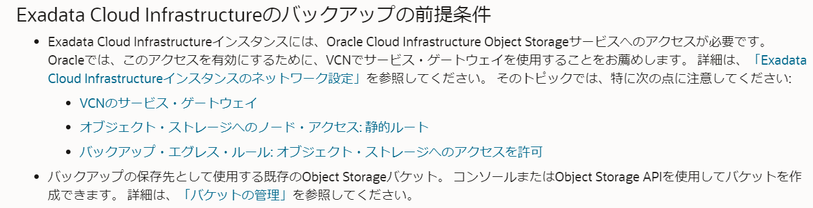
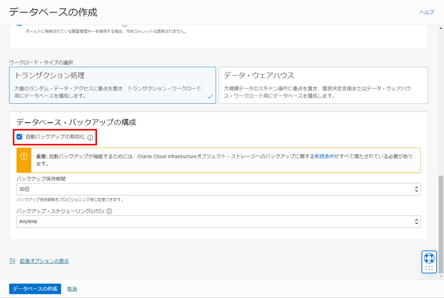
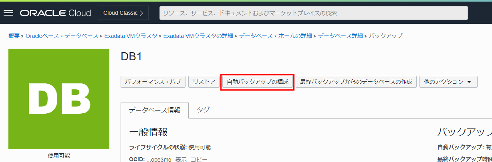
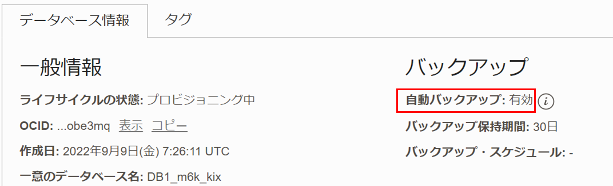
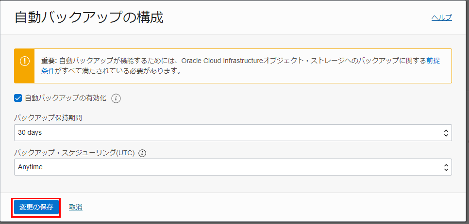
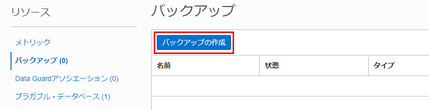
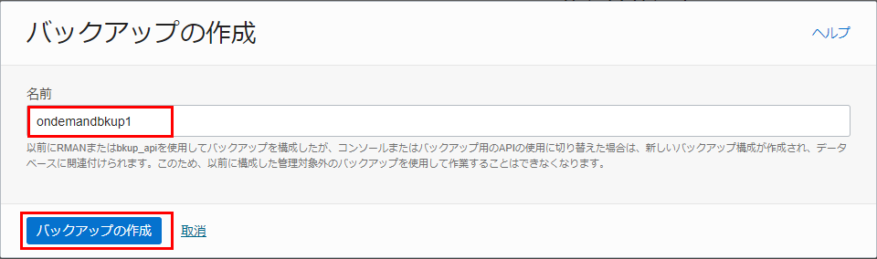
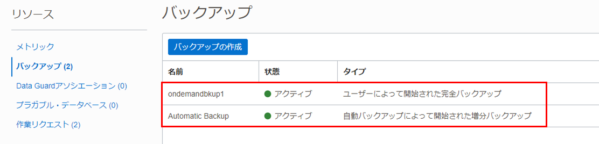
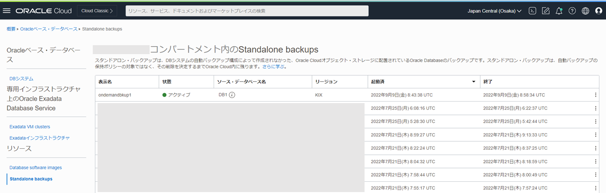
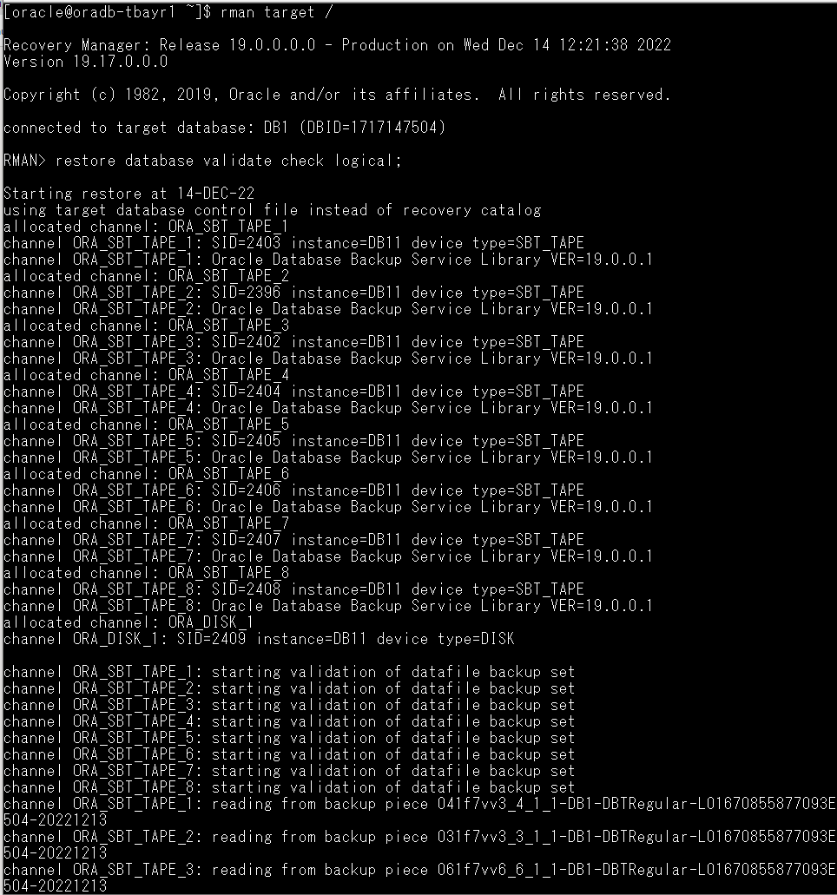

はじめに
サービスを利用していくにあたり、利用している環境のインスタンスやデータが壊れてしまった場合や、過去の時点にデータを戻したい場合など、何か起きた時のデータ復旧のためにバックアップやリカバリについての検討は重要です。
Oracle Databaseのバックアップ操作に対して次の3つのオプションが提供されます。ただし、これらのオプションの混在はサポートされていません。
-
オプション1：Oracle管理バックアップ
1回かぎりの構成に基づいて、ExaDB-Dによって完全に管理されます。完全に統合されたintoExaDB-DであるControl Planeに加えて、OCI APIを介してバックアップにアクセスすることもできます。Oracleではこちらのオプションをお薦めしています。 -
オプション2：ユーザ構成バックアップ
お客様は、dbaascli database backupおよびdbaascli database recoverコマンドを使用してホストからバックアップを構成することができます。ただし、バックアップはControl Planeと同期されず、OCI APIと統合されません。また、バックアップに対する管理操作もライフサイクル操作は、サービス・コントロール・プレーン・コンソールからサポートされていません。 -
オプション3：RMANを使用したバックアップ
お客様が所有するカスタマイズ・スクリプトとともにRMANを使用してバックアップを直接取得できます。RMANを使用してバックアップする場合は、バックアップ自動化からデータベースの登録を解除する必要があります。以上のオプションについての詳細はバックアップおよびリカバリ操作を実行するためのOracle推奨オプションを参照してください。
Oracle Cloud Infrastructure Exadata Database Service on Dedicated Infrastructure (ExaDB-D) では、RMANを利用した自動バックアップ機能が利用可能で、リカバリも最新時点やPoint in Time Recovery(PITR)の任意の時点まで復旧ができます。
ここでは、OCIコンソールから自動バックアップを構成するまでの手順についてご紹介します。
目次 :
- 1. 自動バックアップの前提条件を確認する
- 2. 自動バックアップの設定をしよう
- 3. 自動バックアップの設定を変更しよう
- 4. オンデマンド・バックアップを取得しよう
- 5. 取得したバックアップを確認しよう
前提条件 :
- 101 : ExaDB-Dを使おうを通じてExaDB-Dの作成が完了していること
所要時間 : 約1時間 ※環境によって異なるため、参考値です
1. 自動バックアップの前提条件を確認する
まずは設定するにあたり前提条件を確認してみましょう。 オブジェクト・ストレージに取得することを前提にまとめています。DBシステム内(FRA)にとる場合など、CLI(bkup_api)で設定する場合には、バックアップはコンソールからの管理対象外となります。
Exadata Cloud Infrastructureのバックアップの前提条件：

参照：Exadata Cloud Infrastructureのバックアップの前提条件
2. 自動バックアップの設定をしよう
次に自動バックアップの設定方法を紹介します。 自動バックアップはデータベース作成時もしくはデータベース作成後に構成する事ができます。
-
データベース作成時に構成する場合 データベースの作成 ダイアログの データベース・バックアップの構成 の項目で 自動バックアップの有効化 にチェックを入れます。データベースの作成方法についての手順は101 : ExaDB-Dを使おうの3.データベースの作成をご参照ください。

-
データベース作成後に構成する場合 対象のデータベースの データベース・ホームの詳細 ぺージの 自動バックアップの構成 をクリックします。

変更内容を選択の上、変更の保存 をクリックします。

-
自動バックアップの設定内容の確認 設定後、データベース情報から確認可能です。

3. 自動バックアップの設定を変更しよう
OCI コンソールから設定済のバックアップ設定を変更、無効化することが可能です。
-
対象のデータベースのデータベース・ホームの詳細ぺージの自動バックアップの構成をクリックします。
-
変更内容を選択の上、変更の保存をクリックします。

4. オンデマンド・バックアップを取得しよう
自動バックアップとは別に、フルバックアップを任意の時点で取得することが可能です。 例えば、『大きな変更を加えた直後』や『別環境への複製やリストアのため』などにフルバックアップを取っておくことで、フル＋増分バックアップをリストアするよりもリストア時間の短縮が期待できます。
-
対象のデータベースのデータベース・ホームの詳細ページから、リソースのバックアップを選択し、バックアップの作成をクリックします。

-
識別するためのバックアップの任意の名前を入力し、バックアップの作成をクリック

5. 取得したバックアップを確認しよう
対象のデータベースのデータベース・ホームの詳細ページからリソースのバックアップを選択すると、そのデータベースのバックアップが一覧で表示されます。

また、オンデマンド・バックアップとして取得したフル・バックアップは、スタンドアロン・バックアップとして確認することができます。Oracle Public Cloud上のExadataでスタンドアロン・バックアップをクリックすると、スタンドアロン・バックアップの一覧が表示されます。

データベースを終了(削除)する際に、自動バックアップでとられたバックアップは削除されますが、オンデマンド・バックアップとして取得したフル・バックアップはスタンドアロン・バックアップとして残ります。 データベース削除後に再度バックアップを利用する可能性がある場合には、オンデマンド・バックアップを取得しておくといいでしょう。
また、取得したバックアップがいざという時に使えるかを確認する方法として、リストアを実行せずにバックアップの破損などを検出する事が可能な RMAN の RESTORE VALIDATE コマンドが有効です。 なお、検証中の負荷を考慮して検証できるタイミングに定期的に実行していただくことが推奨です。
実行コマンド：
rman target /
RESTORE DATABASE VALIDATE CHECK LOGICAL;
実行例：

以上で この章の作業は完了です。
参考資料
- Oracle Cloud Infrastructure Documentation - Oracle Exadata Database Service on Dedicated Infrastructure
- Oracle Cloud Infrastructure Exadata Database Service on Dedicated Infrastructure (ExaDB-D) サービス詳細